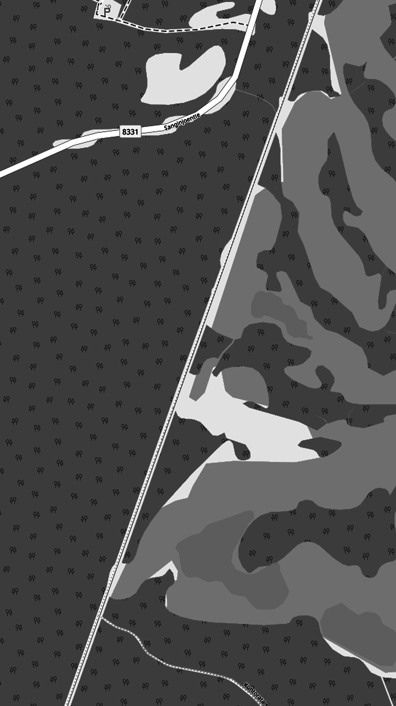

<ion-header>
  <ion-toolbar>
    <ion-buttons slot="start">
      <ion-menu-button><ion-icon name="menu-outline"></ion-icon></ion-menu-button>
    </ion-buttons>
    <ion-item  lines="none">
      <ion-icon (click)="openchat()" name="chatbox-outline" slot="end"></ion-icon>
    </ion-item>
  </ion-toolbar>
</ion-header>


<ion-content [fullscreen]="false">
  <div id="container">
    
    <div id="chat" *ngIf="showchat" style="position:fixed;width:100%;bottom:0;height:50%;background:#000000ff">
      <h2>test</h2>
    </div>
  </div>


</ion-content>

